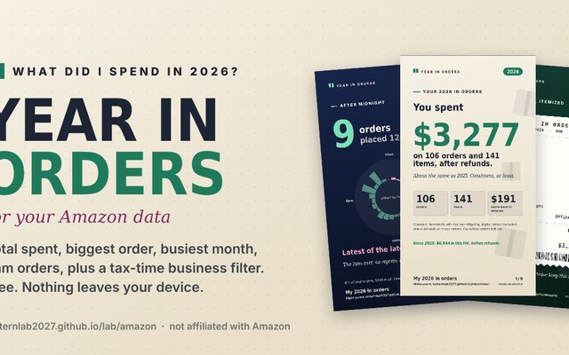
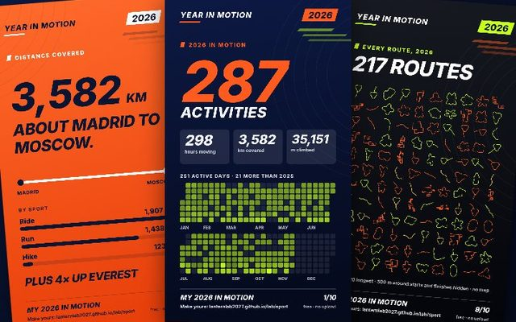
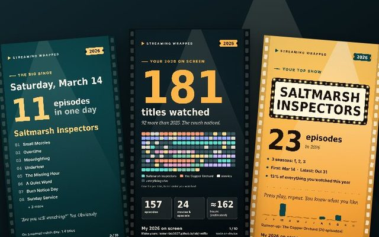
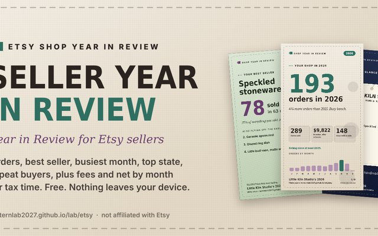
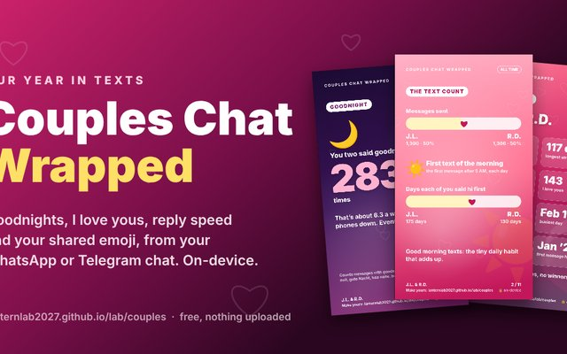

All nine, longest export wait first
Each one needs one file you download from the service yourself. Not ready yet? Every app has a sample deck made from invented data.
-

Tinder · Hinge
Dating Wrapped
How to get your Tinder or Hinge year in review: rates and patterns only, never names or message text.
- File
- The zip the app emails you (Tinder
data.json; Hingematches.jsonor its CSV tables) - Export wait
- Days to weeksTinder: usually a few days, link lasts 24 hours. Hinge: most within 30 days, link lasts 48 hours.
That button is Tinder’s. Hinge is requested in the app: Hinge’s steps · Our step-by-step guide
-
TikTok
Scroll Wrapped
How to get your TikTok year in review: videos watched, scroll clock, longest doomscroll. Messages are never read.
- File
- The zip from Download your data (JSON or TXT), or
user_data_tiktok.json - Export wait
- 1–4 daysTikTok notifies you when it’s ready; the file is available for up to 4 days.
In the app: Profile → menu → Settings and privacy → Account → Download your data. Our step-by-step guide
-

Amazon
Year in Orders
How to get your Amazon year in review: what you spent, as cards, plus a business-expense CSV.
- File
- The data-request zip with
Your Orders(plus Returns & Refunds if offered) - Export wait
- Hours to daysOften a few hours, sometimes a few days; Amazon allows up to 30 days for big requests.
Pick “Your Orders” only for a faster file. Amazon’s help page · Our step-by-step guide
-

Strava · Garmin · GPX
Year in Motion
How to get your Strava or Garmin year in review, with route art, streaks and distance in real-world terms.
- File
- Strava’s archive
.zip, Garmin’sActivities.csv, or your.gpx/.fitfiles - Export wait
- A few hoursStrava emails the archive, usually within a few hours. Garmin’s activities CSV is instant.
That button is Strava’s (Settings → My Account → Download your account). Garmin and GPX steps
-

Goodreads · StoryGraph · Libby
Reading Wrapped
How to get your Goodreads, StoryGraph or Libby year in review: books, pages, top-rated read and reader personality.
- File
goodreads_library_export.csv, your StoryGraph CSV, or Libby’s timeline spreadsheet- Export wait
- MinutesGoodreads and Libby make the file on the spot; StoryGraph may email you a link.
That button is Goodreads’ Import and export page (use a desktop browser). Libby’s steps · StoryGraph and all steps
-

Netflix
Streaming Wrapped
How to get your Netflix year in review: top show, biggest binge, longest streak and your viewer personality.
- File
NetflixViewingHistory.csv(Viewing activity → Download all), one profile at a time- Export wait
- InstantDownloads straight away in a web browser. (The optional full-account request can take up to 30 days.)
That button opens Viewing activity; scroll down and pick Download all. Our step-by-step guide
-

Etsy sellers
Seller Year in Review
How to get your Etsy shop’s year in review, plus a tax summary of sales, refunds and fees by month.
- File
EtsySoldOrdersandEtsySoldOrderItemsCSVs; monthly statement CSVs for the tax summary- Export wait
- InstantShop Manager → Settings → Options → Download Data.
That button opens Shop Manager’s Options page; choose the Download Data tab. Our step-by-step guide
-

WhatsApp · Telegram
Group Chat Wrapped
How to get your WhatsApp or Telegram group chat year in review: the top yapper, the night owl, the ghost and more.
- File
- WhatsApp
.txtor.zip(Export chat → Without media), or Telegram Desktop’sresult.json - Export wait
- About 30 secondsMade on your phone; nothing to request.
That button is WhatsApp’s help page for exporting a chat. iPhone, Android and Telegram steps
-

WhatsApp · Telegram, 1:1 chats
Couples Chat Wrapped
How to get your year in texts with one person: who texts first, reply times, goodnights. No message text on the cards.
- File
- A 1:1 WhatsApp
.txtor.zip, or Telegram Desktop’sresult.json - Export wait
- About 30 secondsMade on your phone; nothing to request.
That button is WhatsApp’s help page for exporting a chat. iPhone, Android and Telegram steps
Questions
Is there a Wrapped for TikTok, Amazon, Netflix or my group chat?
These services all let you download a copy of your own data. The apps above turn that file into year-in-review cards you can share, so they work as a free alternative whether or not the service makes a recap of its own.
Are these made by Spotify, TikTok, Amazon or the other services?
No. They are independent, free tools from Lantern Lab. They only read the export files those services already let you download. Not affiliated with or endorsed by any service named on this page.
Is my data uploaded anywhere?
No. Each app reads your file with JavaScript in your browser tab, and nothing is uploaded. Each app page explains how you can check this yourself, for example with airplane mode on.
When does Spotify Wrapped 2026 come out?
Spotify hasn’t announced a date. In recent years it has landed in late November or early December. The exports that take days are worth requesting now either way.
Why does the list start with the slowest exports?
Because those are the ones to start first. Hinge can take weeks and TikTok a few days, while Netflix, Etsy and a chat export are ready in seconds. Request the slow ones, then come back for the rest.